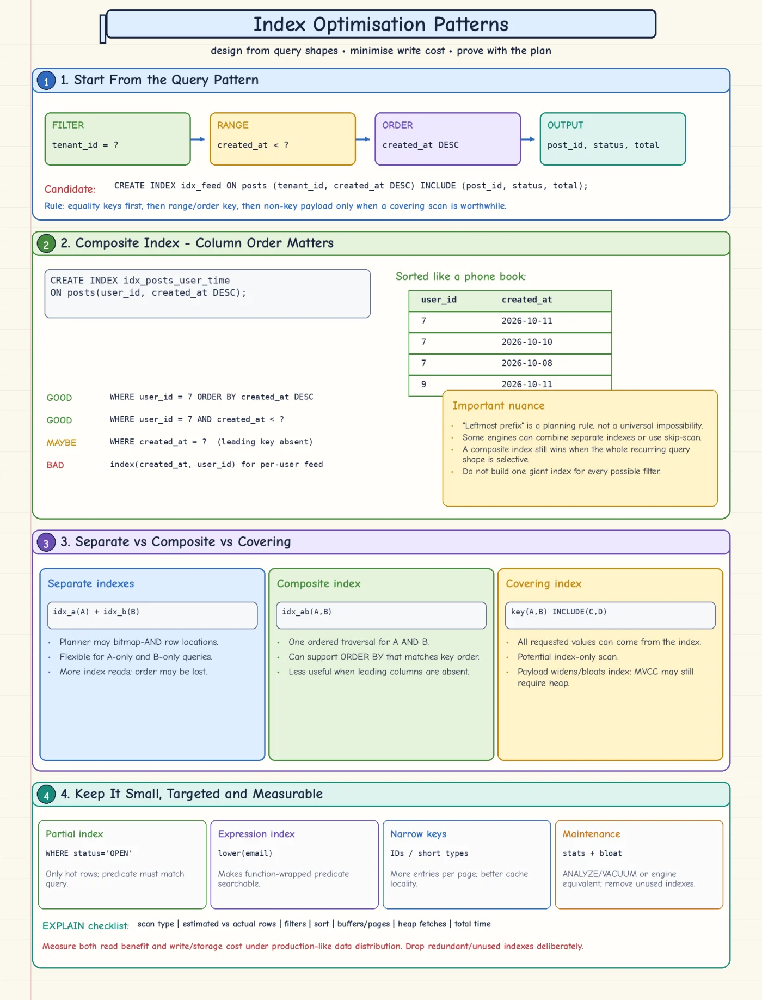

Topic · Database Indexing
Index Optimization Patterns
Design indexes from real query shapes - composite, covering, partial, expression - then prove them with the plan.


Quick Revision
- Start from the query: filters, joins, ranges, sort, returned columns, limit, match count, frequency.
- Composite order: equality → range/order → extra filters → payload.
- Covering (
INCLUDE) can skip table fetches; MVCC may still visit the heap. - Partial index for a small hot subset; expression index for
lower(email). - Keep keys narrow; use cursor pagination, not large
OFFSET. - Build big indexes online and watch replicas.
Patterns
-- feed: tenant, newest first, cursor CREATE INDEX idx_posts_tenant_time ON posts (tenant_id, created_at DESC) INCLUDE (post_id, status, total);
- Composite -
(user_id, created_at DESC)servesWHERE user_id = ? ORDER BY created_at DESC. "Leftmost prefix" is a heuristic; some engines skip-scan, but match the recurring query. - Separate vs composite -
INDEX(A)+INDEX(B)means bitmap intersect and lost order but reusable for A-only/B-only;INDEX(A,B)wins for frequentA AND B. - Covering - payload columns avoid random row fetches; cost: bigger index, heavier writes, cache pressure. Check
Heap Fetches. - Partial -
ON jobs(created_at) WHERE status = 'PENDING'. Query predicate must imply the index predicate. - Expression -
ON users(lower(email))forWHERE lower(email) = ?; collation and casts must match. - Narrow keys - more entries per page, higher fan-out, less WAL, cheaper secondaries.
- Pagination -
WHERE (created_at, id) < (?, ?) ORDER BY created_at DESC, id DESC LIMIT 50with a matching index;idbreaks ties. - Health - monitor usage, size, bloat, page splits, cache hit, WAL, estimate accuracy, unused/redundant indexes. Rebuild on evidence.
- Safe build - estimate size/temp disk, online/concurrent build, know lock phases, throttle, watch replica lag, validate plan, drop redundant indexes later.
Basics: How Indexes Work. Schema context: Schema Design.
Trade-offs
| Choice | Benefit | Cost / risk |
|---|---|---|
| Separate single-column indexes | Flexible; optimizer may combine | Multiple scans, set ops, lost order |
| Composite index | One traversal for a recurring multi-column query | Order-sensitive; less reusable |
| Narrow index | Fan-out, cache locality, cheap writes | Extra fetches for other columns |
| Covering index | May skip heap fetches | Larger, heavier writes; MVCC heap checks |
| Full index | Handles every row | Wasteful for a small queried subset |
| Partial index | Small and cheap for a hot subset | Query must imply the predicate |
| Online/concurrent build | Less blocking | Slower, more I/O, extra phases |
Failure modes
- Composite ignored - leading order doesn't match → equality first, then range/order.
- Function-wrapped predicate - index on
email, query onlower(email)→ expression index or normalize. - Boolean/status index useless - low selectivity → partial index or combine with a selective key.
- Index-only scan still hits heap - visibility unknown → healthy vacuum, slow-changing tables.
- Covering index too big - include only narrow, frequently returned columns.
- Later pages slower -
OFFSETscans and discards → keyset pagination.
Interview practice
Answer aloud, then reveal.
Zomato: separate indexes on A and B - how does WHERE A=10 AND B=20 run? Is (A,B) better?
Optimizer uses the more selective index and filters, or intersects two bitmaps before fetching. (A,B) seeks directly to the contiguous range and keeps order - usually better for a frequent combined predicate; separate indexes serve A-only/B-only queries. Compare plans.
Atlassian P40 (2025): show the author's friend count on every post at huge scale.
Don't COUNT(*) per render. Index both relationship directions, keep a materialized friend_count per user (transactional or idempotent events), cache hot counts, reconcile periodically, batch-fetch counts for all authors.
Design an index for a per-user feed with cursor pagination.
(user_id, created_at DESC, post_id DESC); include narrow output columns only if index-only scans matter. post_id makes pagination deterministic.
Roll out a new index on a billion-row table.
Estimate disk/WAL headroom, online/concurrent build, watch locks, I/O, CPU, write latency, replicas, temp space; validate the plan; enable gradually; drop redundant indexes after observing.
Why not index every column?
Each index costs storage and write maintenance, plus planning choices, cache pressure, WAL, and backup size. Index only real query value.